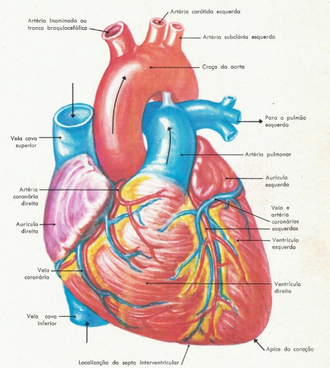
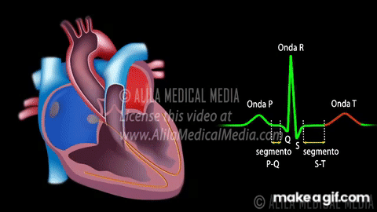

O ciclo do sistema circulatório
O sangue, começando pelo ventrículo esquerdo do coração, é bombeado pela artéria aorta para todo o corpo, onde entrega oxigênio e nutrientes às células. Depois, retorna ao coração através das veias cavas inferior/superior, entrando no átrio direito. Em seguida, passa para o ventrículo direito e é bombeado pela artéria pulmonar para os pulmões, onde recebe oxigênio. O sangue oxigenado volta ao coração pelo átrio esquerdo através das veias pulmonares, completando o ciclo ao entrar novamente no ventrículo esquerdo.

Áreas do coração
O coração é dividido em quatro câmaras: os átrios direito e esquerdo
na parte superior, e os ventrículos direito e esquerdo na parte
inferior. O septo atrial separa os dois átrios, enquanto o septo
ventricular divide os dois ventrículos, garantindo que o sangue rico
em oxigênio não se misture com o sangue pobre em oxigênio.
Válvulas cardíacas regulam o fluxo sanguíneo dentro do coração: a
válvula tricúspide está entre o átrio direito e o ventrículo
direito, a válvula mitral entre o átrio esquerdo e o ventrículo
esquerdo, a válvula pulmonar entre o ventrículo direito e a artéria
pulmonar, e a válvula aórtica entre o ventrículo esquerdo e a aorta.
Essas válvulas garantem que o sangue flua em uma única direção,
prevenindo refluxo.
Dos ventrículos do coração, emergem apenas artérias que transportam sangue para o corpo e os pulmões: do ventrículo esquerdo sai a aorta, e do ventrículo direito sai a artéria pulmonar. Dos átrios, chegam apenas veias que trazem sangue de volta ao coração: no átrio direito desembocam a veia cava superior e inferior, e no átrio esquerdo desembocam as veias pulmonares.

Subdivisão artéria aorta
A artéria aorta é subdividida em várias partes principais, cada uma
com suas funções específicas no fornecimento de sangue oxigenado ao
corpo. Aqui está uma visão geral das subdivisões da artéria
aorta:
1. Aorta Ascendente:
- Transporta sangue oxigenado para o arco aórtico. Da aorta
ascendente surgem as artérias coronárias direita e esquerda, que
fornecem sangue ao próprio músculo cardíaco.
2. Arco Aórtico:
- Tronco Braquiocefálico: Se divide em artéria subclávia direita e
artéria carótida comum direita, fornecendo sangue para o braço
direito e parte da cabeça e pescoço.
- Artéria Carótida Comum Esquerda: Fornece sangue para a parte
esquerda da cabeça e pescoço.
- Artéria Subclávia Esquerda: Fornece sangue ao braço esquerdo.
3. Aorta Descendente:
- Aorta Torácica: Passa pelo tórax e fornece sangue para a parede
torácica e órgãos torácicos, como o esôfago e os brônquios.
- Aorta Abdominal: Continua abaixo do diafragma e fornece sangue
para a parede abdominal, órgãos abdominais e pélvicos. Ela se divide
em duas artérias ilíacas comuns que fornecem sangue para as pernas e
a parte inferior do tronco.
As veias cavas são responsáveis por retornar o sangue desoxigenado ao coração. A veia cava superior coleta sangue das regiões superiores do corpo, como cabeça e braços, enquanto a veia cava inferior coleta sangue das partes inferiores, incluindo pernas e abdômen. Ambas desembocam no átrio direito do coração, completando o ciclo circulatório.
As artérias pulmonares e as veias pulmonares desempenham papéis cruciais na circulação pulmonar. A artéria pulmonar, que se origina do ventrículo direito, transporta sangue pobre em oxigênio para os pulmões, onde ocorre a troca gasosa. Após essa oxigenação, o sangue retorna ao coração através das veias pulmonares, que desembocam no átrio esquerdo, completando o ciclo e garantindo que o sangue oxigenado seja distribuído para o restante do corpo.

Epicárdio, Miocárdio e Endocárdio.
O epicárdio é a membrana externa que envolve e protege o coração,
permitindo seu movimento livre.
O miocárdio é a camada intermediária e muscular, responsável pelas
contrações cardíacas que bombeiam o sangue.
O endocárdio é a camada interna que reveste as câmaras e válvulas
do coração, garantindo uma superfície lisa para o fluxo sanguíneo.
As artérias coronárias são responsáveis por fornecer sangue rico
em oxigênio ao músculo cardíaco, garantindo sua função contínua e
eficiente. As principais artérias coronárias são a
artéria coronária esquerda e a artéria coronária
direita, que se ramificam a partir da aorta ascendente.
Já as veias coronárias coletam o sangue pobre em oxigênio do
músculo cardíaco e o conduzem de volta ao átrio direito do
coração, principalmente através do
seio coronário, garantindo a remoção eficaz de
resíduos metabólicos e manutenção da circulação coronariana.
Veia safena
As veias safenas são cruciais para o retorno do sangue ao coração,
sendo as principais a Veia Safena Magna e a Veia Safena Parva. A
primeira começa no tornozelo interno e termina na virilha, coletando
sangue da perna e coxa. É comumente usada em cirurgias de bypass
coronário. A Veia Safena Parva inicia no tornozelo posterior,
terminando na parte de trás do joelho, coletando sangue da perna.
Ambas ajudam a drenar o sangue das pernas e facilitam o retorno ao
corpo, mas problemas como varizes podem causar dor e inchaço nessas
veias.
Artéria hepática
A artéria hepática é essencial para fornecer oxigênio e nutrientes
ao fígado. Ela se origina da artéria celíaca e se ramifica em duas
partes principais: a Artéria Hepática Própria Direita, que supre a
parte direita do fígado, e a Artéria Hepática Própria Esquerda, que
supre a parte esquerda. Além disso, a Artéria Hepática
Gastroduodenal fornece sangue para o estômago, duodeno e pâncreas. A
veia porta hepática também é importante para o fornecimento de
sangue ao fígado.
Séptico atrial
O septo atrial é essencial para a função normal do coração, ajudando
a manter a separação eficiente entre os dois tipos de sangue que
circulam no órgão.
Funcionamento Elétrico do Coração
O funcionamento elétrico do coração é como um sistema de comando que controla os batimentos cardíacos. Vamos entender isso em etapas simples:
- Nó Sinoatrial (SA): É o "marca-passo natural" do coração, localizado na parte superior do átrio direito. Ele gera impulsos elétricos que iniciam cada batimento cardíaco.
- Átrios: Os impulsos do nó SA fazem os átrios (as duas câmaras superiores do coração) se contraírem, empurrando o sangue para os ventrículos (as duas câmaras inferiores).
- Nó Atrioventricular (AV): Após passar pelos átrios, o impulso elétrico chega ao nó AV, que está entre os átrios e os ventrículos. O nó AV retarda um pouco o impulso para garantir que os átrios tenham tempo de esvaziar completamente o sangue nos ventrículos.
- Feixe de His e Fibras de Purkinje: Depois do nó AV, o impulso elétrico viaja pelo Feixe de His e se divide nas fibras de Purkinje, que distribuem o impulso pelos ventrículos, fazendo-os se contraírem e bombearem o sangue para fora do coração (para os pulmões e para o resto do corpo).
Esse processo acontece de forma contínua e coordenada, resultando em batimentos cardíacos regulares e eficientes. Em resumo, a parte elétrica do coração é um sistema de sinalização que garante que as contrações do coração sejam coordenadas e eficazes.
Pequena e Grande Circulação
Pequena Circulação
A pequena circulação, ou circulação pulmonar, é o trajeto que o sangue faz do coração para os pulmões e de volta ao coração. O sangue pobre em oxigênio sai do ventrículo direito, vai para os pulmões através das artérias pulmonares, onde recebe oxigênio, e retorna ao átrio esquerdo do coração pelas veias pulmonares.
Grande Circulação
A grande circulação, ou circulação sistêmica, é o trajeto que o sangue faz do coração para todo o corpo e de volta ao coração. O sangue rico em oxigênio sai do ventrículo esquerdo, é distribuído por todo o corpo através da aorta e suas ramificações, e retorna ao átrio direito do coração através das veias cavas, agora pobre em oxigênio.